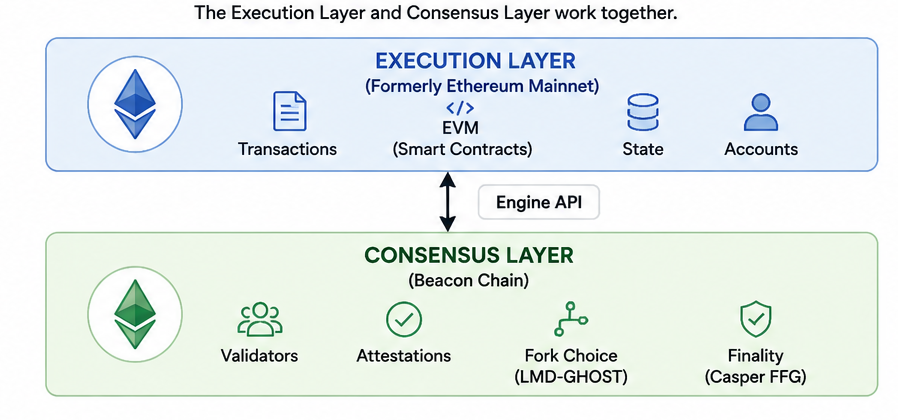

Section VII: Ethereum Framework · Lesson 02-EF
Ethereum "Mining", PoS, and Security
Agenda
- Today we explore how Ethereum organizes data, proposes blocks, and reaches agreement.
- We’ll trace the shift from Proof of Work “mining” to Proof of Stake “validation.”
- Topics: block structure and headers, validator duties and rewards, and how consensus ensures shared state.
- Security and incentives are part of the story — they explain why these mechanisms work under pressure.
The Ethereum Operational Framework
Ethereum can be considered a global, append-only state machine shared by peers.
Anyone can submit a transaction; validators propose blocks and attesters verify and accept.
The chain with the most cumulative attestation weight is the canonical history.
Ownership is control of private keys (EOAs and contract accounts).
Incentives fund security and honest participation.
Attestation weight: the total voting power behind a block or branch, measured by how much validator stake is represented in the latest attestations supporting it.
Execution Payload: Header Structure
- Execution Payload = Header + Body
- Header: commitments and metadata.
- Body: ordered transactions and execution data.
- Header: commitments and metadata.
- Core header roots (Merkle–Patricia tries):
- These are ordered, hash-linked data structures built with
Keccak-256, so a single root commits to the exact contents and order beneath it. state_root→ commits to global state after execution.
transactions_root→ commits to ordered list of transactions.
receipts_root→ commits to execution results (status, gas, logs).
- These are ordered, hash-linked data structures built with
- Operational Fields: gas accounting, parent hash, indexing, etc.
Keccak-256 is Ethereum’s main cryptographic hash function. It is based on the Keccak sponge construction, not quite the Merkle-Damgard design used by SHA-256; it is closely related to but not identical with the NIST-standardized SHA-3.
Beacon Blocks and Execution Payloads
- In post-Merge Ethereum, the beacon block is the outer consensus-layer container validators propose and attest to.
- The execution payload resides inside that beacon block.
- Outer fields:
slot— 8 bytesproposer_index— 8 bytesparent_root— 32 bytesstate_root— 32 bytes
- Body fields with fixed-size types:
randao_reveal(BLSSignature) — 96 byteseth1_data— deposit-contract view / deposit metadatagraffiti— optional metadata, 32 bytes
- Variable-size fields:
attestations,proposer/attester slashings,deposits, exits, sync dataexecution_payload
The Merge: Beacon Chain to PoS

- Execution layer: transactions, accounts, smart contracts, and state.
- Consensus layer: handles validators, attestations, fork choice, and finality.
PoS Overview: Validators, Committees, and Clients
- Join by staking 32 ETH in the deposit contract on the execution layer.
- Each validator runs:
- Execution client → handles transactions and state (EVM).
- Consensus client → runs the Consensus Layer: assigns duties, verifies blocks, manages committees and finality.
- Validator process → signs duties assigned by the consensus client.
- Execution client → handles transactions and state (EVM).
- Duties (execution):
- Rarely: propose a block for a slot.
- Frequently: attest within a randomly selected committee that votes on block validity and checkpoints.
- Rarely: propose a block for a slot.
- Rewards for timely, correct attestations; penalties for missed or conflicting votes.
- Slashing burns stake for provable equivocation or surround voting.
- Operational focus: client diversity, monitoring, secure key handling.
Committee attesters earn small rewards for each timely, correct vote. Proposers receive a larger reward that includes attestation aggregation bonuses and transaction fees. Rewards are funded by new ETH issuance and priority fees paid by users.
Slots and Epochs
- Slot = 12 seconds; at most one block proposal per slot.
- Epoch = 32 slots (~6.4 minutes); committees reshuffle each epoch.
- Each slot, one committee (a subset of all validators) attests — over a full epoch, every active validator attests exactly once.
- Missed slots happen — liveness continues through the next proposal.
- Finality escalates through epoch checkpoints (Casper-FFG).
- Per-slot lifecycle: proposer broadcasts a block (~0–4s), committee attests to it (~4s mark), attestations are BLS-aggregated and included in a subsequent slot’s block.
Boneh-Lynn-Shacham (BLS) signature scheme compresses the signatures of the attestors into a single compact signature, which can be verified easily.
Validator Selection & Randomness
- Purpose: prevent predictability or bias in proposer and committee selection.
- Source: RANDAO — Ethereum’s rolling randomness mechanism for validator selection.
- In each slot, the proposer includes a
randao_revealin the beacon block. - Over time, those proposer reveals update the shared randomness seed used by the consensus layer.
- In each slot, the proposer includes a
- Assignments:
- The Consensus Layer uses the seed to shuffle validators and assign proposers/committees per slot.
- Selection is weighted by effective balance and fixed only shortly before duties are performed.
- The Consensus Layer uses the seed to shuffle validators and assign proposers/committees per slot.
- Incentives:
- Missing or withholding a reveal forfeits rewards and only marginally affects the overall result.
- Rolling contributions from many slots make the randomness hard to steer in practice.
RANDAO is stake-weighted: each validator’s influence on the random seed is proportional to their effective balance (up to 32 ETH per key), so selection probability scales with the amount of ETH staked.
RANDAO: How the Randomness Is Built
- Each slot’s proposer includes a
randao_revealin the beacon block. - That reveal is a BLS signature on the current epoch number.
- The consensus layer mixes that reveal into the running RANDAO state.
- The updated seed is then reused with slot and epoch context to:
- select future proposers
- shuffle validators into committees
Contrast: some PoS systems use VRFs for private per-validator randomness; Ethereum currently uses collective RANDAO instead.
Global Randomness: RANDAO + VDF Beacons
- Why shared randomness?
- Ethereum needs one deterministic seed that the whole consensus layer can use for proposer selection and committee rotation.
- RANDAO’s limitation:
- the last revealer can withhold its contribution and marginally bias the final seed.
- Why this is tolerated in practice:
- withholding forfeits rewards
- the effect is diluted by many prior contributions
- VDF idea:
- a Verifiable Delay Function would add a time-locked step that is easy to verify but impossible to compute early.
- that would reduce or eliminate the last-revealer advantage.
- Mainnet status: VDFs are still a proposed improvement, not part of Ethereum mainnet today.
RANDAO is Ethereum’s production randomness mechanism today. VDFs are mentioned because they address bias at the margin, not because they are already deployed.
Forks in Proof of Stake — Causes and Resolution
- Each slot has one designated proposer, but messages spread asynchronously.
- Short-term forks occur when:
- The proposer’s block arrives late or not at all.
- Attestations propagate in different orders across validators.
- A proposer equivocates or two blocks exist for the same slot.
- The proposer’s block arrives late or not at all.
- Result:
- Validators may temporarily disagree on the chain head.
- Validators may temporarily disagree on the chain head.
- Resolution:
- Attestations serve as stake-weighted votes for blocks.
- The fork-choice rule — LMD-GHOST (Latest-Message-Driven Greedy Heaviest-Observed SubTree) — follows the branch with the most recent total attestation weight.
- As new votes arrive, honest nodes converge on the same head.
- Attestations serve as stake-weighted votes for blocks.
LMD-GHOST starts at the last justified checkpoint and walks down the block tree, choosing whichever child has the greatest stake weight from validators’ latest attestations. Each validator counts once (their most recent vote only). The result is a head that reflects the current majority view, not historical block count.
Gasper: Fork Choice + Finality
- Gasper = the combined consensus protocol that pairs two mechanisms:
- LMD-GHOST (fork choice): picks the head by following the branch with the greatest latest attested stake weight.
- Casper-FFG (finality gadget): finalizes checkpoints once ≥ 2/3 of total stake votes consistently across epochs.
- LMD-GHOST (fork choice): picks the head by following the branch with the greatest latest attested stake weight.
- Finality sequence (across two epochs):
- Validators cast source→target votes; when ≥ 2/3 of stake supports a checkpoint link, the target becomes justified.
- When the next epoch’s checkpoint is also justified, the earlier checkpoint becomes finalized — economically irreversible.
- Safety: reverting a finalized checkpoint implies ≥ 1/3 of total stake must be slashed.
- Liveness: inactivity leak gradually restores a supermajority after major outages.
Gasper is the name for Ethereum’s full consensus protocol. Casper-FFG is one component within it — the finality gadget. LMD-GHOST is the other — the fork-choice rule. “Casper” alone is sometimes used loosely to refer to either the gadget or the broader system, but precisely it means the FFG finality layer only.
Double Spending (Threat Model)
- Goal: accept payment, then publish a conflicting history that erases it.
- PoW: requires sustained majority hash power to outpace the honest chain.
- PoS: requires majority stake and willingness to be slashed — post-finality rewrites destroy at least 1/3 of bonded stake.
- Mainnet double-spends are economically impractical under PoS finality.
- Settlement policy: wait for finalized checkpoints (PoS) rather than counting confirmations (PoW).
Real-world example: Ethereum Classic suffered a series of 51% double-spend attacks in 2020, where attackers rented enough hash power to reorganize thousands of blocks and reverse exchange deposits worth millions of dollars. This was feasible because ETC’s total hash rate was low enough to rent temporarily. Ethereum mainnet’s shift to PoS changes the calculus entirely — an attacker cannot rent stake and walk away; they must own it and accept that it will be slashed.
Balance Attack
- Goal: split the network into sub-partitions with roughly equal validator weight.
- Delay cross-partition communication so each side builds its own fork and accumulates attestations independently.
- Selectively release withheld blocks or attestations to one side, making its branch heavier under LMD-GHOST; the other side reorgs.
- Exploits propagation asymmetry rather than absolute majority of stake.
- Defenses: diverse peering, fast relay networks, client diversity, monitoring for unusual reorg depth or participation dips.
Real-world relevance: In 2023, researchers demonstrated balancing-style attacks against LMD-GHOST in testnet conditions, exploiting proposer boost timing and attestation delays. Ethereum responded with proposer boost — a fork-choice weight bonus given to the current slot’s block when seen on time — which raises the cost of these attacks significantly. The episode illustrates that consensus security depends on network plumbing, not just cryptography.
Security Risk: Smart Contract Code Reuse
- Less than 10% of contracts are unique bytecode; templates dominate deployments.
- One vulnerability can impact thousands of dependent contracts (e.g., Parity multisig 2017).
- Attackers fingerprint bytecode families to find mass-exploitation targets.
- Mitigations: audited libraries, invariants, upgrade discipline, runtime guards.
- Encourage diversity in implementations and proactive upgrade playbooks.
Real-World Ethereum Security Examples
The DAO Hack (June 2016): A reentrancy vulnerability in The DAO’s smart contract allowed an attacker to drain ~$60M in ETH by repeatedly calling the withdraw function before balances updated. The Ethereum community responded with a controversial hard fork, splitting the chain into Ethereum (ETH) and Ethereum Classic (ETC).
Parity Multisig Wallet (July 2017): Hackers exploited a visibility bug in the Parity multisig library contract, stealing ~$31M in ETH from multiple wallets. A second Parity incident in November 2017 accidentally froze over 500,000 ETH when a user triggered a self-destruct on the shared library — a textbook case of code-reuse risk.
Consensus Layer Finality Delays (May 2023): On May 11–12, Ethereum mainnet experienced two finality delays — the first lasting ~25 minutes, the second over an hour. Consensus client bugs (Prysm, Teku) caused validators to go offline, dropping participation below the 2/3 threshold needed for finalization. Blocks continued to be produced (liveness held), and the network self-recovered without intervention. Client diversity was credited as the key reason the outage stayed brief.
Ethereum Classic 51% Attacks (2020): ETC suffered multiple double-spend attacks where attackers rented enough hash power to reorganize thousands of blocks and reverse exchange deposits. This contrast illustrates why Ethereum’s move to PoS — where stake cannot be rented and walked away from — fundamentally changes the attacker’s calculus.
Nothing-at-Stake
- Risk: in naive PoS, validators could sign multiple competing forks at no cost, undermining convergence.
- Defense: Ethereum enforces objective slashing for three offenses:
- Double proposal — two blocks for the same slot.
- Double attestation — two votes for the same target epoch with different chain heads.
- Surround vote — an attestation whose source→target range encloses or is enclosed by a prior vote.
- Evidence is purely cryptographic — two conflicting signatures from the same key. Intent is irrelevant once proofs exist.
- Correlation penalty: slashing severity scales with how many validators are slashed in the same ~18-day window. An isolated mistake costs ~1 ETH; a coordinated attack involving ≥1/3 of stake can burn the full 32 ETH per validator.
- Slashing events propagate to all clients; anyone can submit evidence, making enforcement decentralized.
All known mainnet slashings have been accidental — misconfigured backups causing double attestations (Staked, 2021; Bitcoin Suisse, 2023). No intentional equivocation has occurred, suggesting the penalty structure deters it effectively.
Finality Delay
- May 11–12, 2023: Ethereum mainnet experienced its first finality delays — consensus client bugs (Prysm, Teku) overloaded validators, dropping participation below the 2/3 threshold needed to finalize checkpoints.
- First incident: ~25 minutes (4 epochs without finality).
- Second incident: over an hour (9 epochs), triggering the inactivity leak penalty.
- What kept working: blocks continued to be proposed and transactions processed — liveness was never lost, only finality paused.
- What recovered it: client diversity meant unaffected clients (e.g., Lighthouse) kept attesting. The inactivity leak gradually penalized offline validators, restoring the 2/3 supermajority. No manual intervention was required.
- Operational lesson: exchanges, bridges, and high-value services should pause large settlements when finality stalls and resume only after consecutive finalized epochs.
The May 2023 incidents validated Ethereum’s design under stress: the protocol distinguished between liveness (blocks keep coming) and safety (finality locks history), degraded gracefully, and self-healed. The community credited client diversity as the primary reason both outages stayed brief.
Censorship
- Real-world case — OFAC / Tornado Cash (2022–2023): After the U.S. Treasury sanctioned Tornado Cash in August 2022, the dominant relay (Flashbots) began filtering out sanctioned transactions. By November 2022, ~77% of relayed blocks excluded those transactions.
- Community response: Flashbots open-sourced its relay code; non-censoring relays (Ultra Sound, Agnostic, bloXroute) launched. By mid-2023, censored blocks dropped to ~30%. Vitalik Buterin publicly supported treating sustained base-layer censorship as a slashable attack.
- Takeaway: Ethereum’s protocol never enforced censorship — sanctioned transactions still reached the chain, just with longer delays. But the episode exposed how infrastructure centralization (few relays, few builders) can create soft censorship even in a permissionless system.
- Proposed mitigations: inclusion lists (forcing proposers to include pending transactions), encrypted mempools, and greater relay/builder diversity.
Builders assemble a candidate block from pending transactions, and a Relay passes that block to validators running middleware (MEV-Boost), so they can choose and propose it without seeing all transaction details first.
Conclusion: Summary of Concepts
- Block structure: Headers cryptographically commit to inputs (
transactions_root), outcomes (receipts_root), and world state (state_root) — enabling verification without full re-execution. - PoS consensus: RANDAO randomness selects validators → committees attest in 12-second slots → LMD-GHOST picks the head → Casper-FFG finalizes checkpoints across epochs.
- Security is layered: The DAO and Parity exploited the application layer; finality delays hit the consensus layer; balance attacks and censorship target the network layer. No single defense covers all three.
- Defenses are economic + operational: Slashing deters equivocation, inactivity leaks restore finality, client diversity limits blast radius, and checkpoint sync blocks long-range attacks.
- Operational takeaway: Monitor participation and finality status, settle on finalized checkpoints (not block count), and treat infrastructure concentration as a security risk.